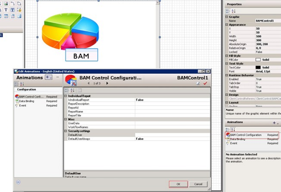
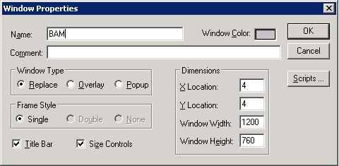

No
Using BAM Inside InTouch
Follow Step 1 to Step 7 listed in the Initial Steps and continue:
- Select the control in the editor and double click on BAM Configuration under Animations. This will open up a new configuration page from where the BAM control can be configured. After configuring the BAM Configuration, click "OK". Save and close the Editor.

- Select the instance and deploy in the ArchestrA IDE, double click the $InTouchViewApp instance (aaReactorDemo) under ViewEngine from the ArchestrA IDE.

- The InTouch WindowMaker appears. Create a new window for the BAM control.

- Provide the name and size for the window.

- Right-click inside the newly opened window and select "Embed ArchestrA Graphic" option.

- This opens up the ArchestrA Galaxy Browser. Select the "Instances" tab and select the object to which the graphic symbol has been added. Select the name of the graphic object (BAM) that has to be displayed.

- Enable security for the BAM window if required.

- Save the window and exit InTouch WindowMaker.
- Save and close the object in the ArchestrA IDE.
- Deploy the $InTouchViewApp instance.
- Open the InTouch Viewer and navigate to Special-> Security->Log On.
- Enter the Credentials and click OK.


- Open the created BAM window from the file menu.


- The BAM Control loads in the window.